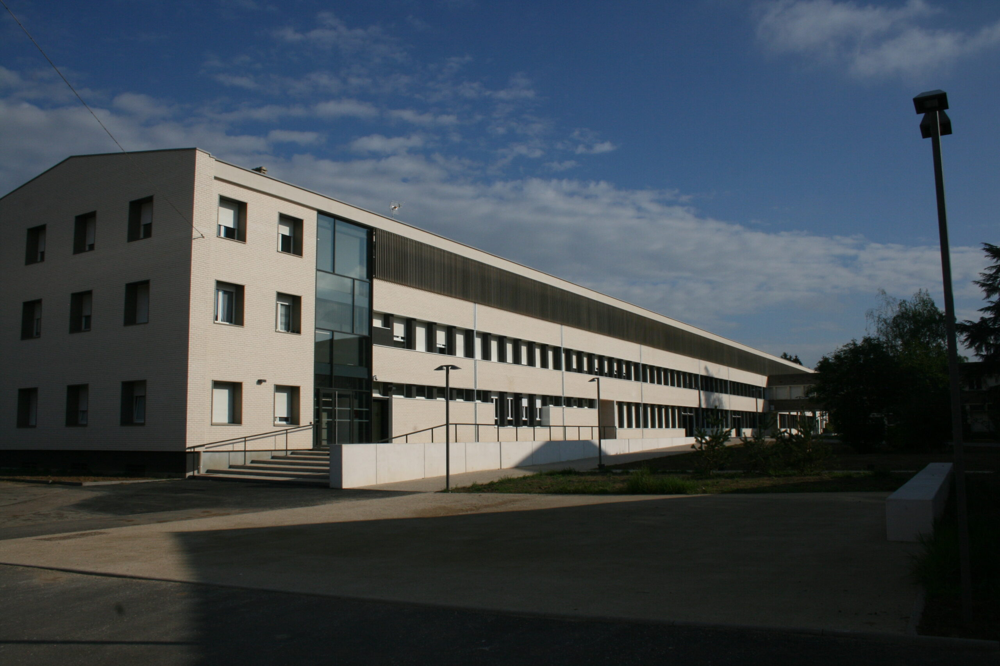

Mon stage de BTS SNIR m'a conduit au sein du service informatique du lycée La Briquerie, une expérience immersive au cœur de la gestion informatique éducative. C'était l'opportunité d'appliquer mes connaissances académiques dans un environnement réel, au service d'une institution dédiée à l'éducation.

Au cours de ce stage, mes missions étaient diverses et stimulantes. J'ai eu la responsabilité d'installer des systèmes d'exploitation sur des ordinateurs, assurant ainsi leur bon fonctionnement. De plus, j'ai contribué à l'expansion des ressources informatiques en installant de nouveaux ordinateurs dans les salles de cours, favorisant ainsi un environnement d'apprentissage technologiquement enrichi. Par moments, j'ai également eu l'occasion de désosser des ordinateurs obsolètes, récupérant judicieusement les composants encore utilisables, illustrant ainsi une approche durable de la gestion des équipements informatiques.